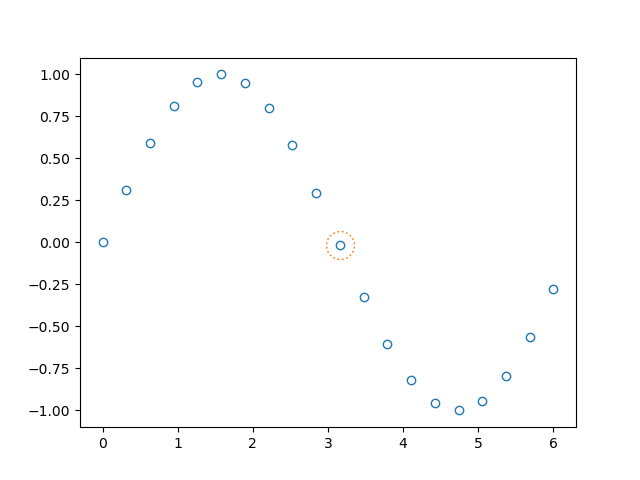
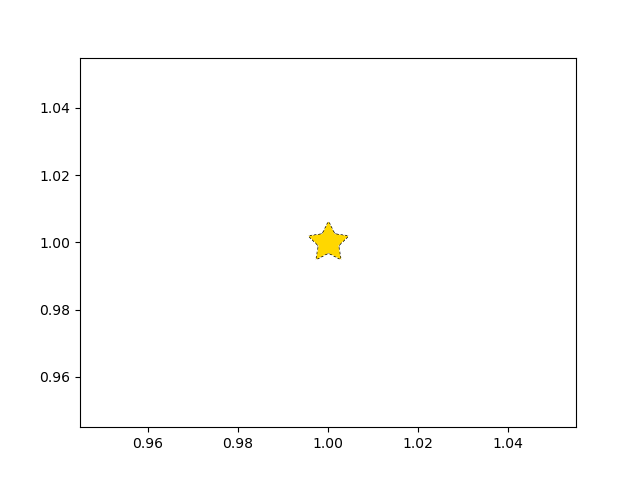

问题一:
在散点图上, 用一个虚线的圆圈标出某个数据点
import numpy as np
import matplotlib.pyplot as plt
import matplotlib.path as mpath
x = np.linspace(0, 6, 20)
y = np.sin(x)
plt.plot(x, y, ls='none', marker='o', mfc='none')
plt.plot(x[10], y[10], marker='o', mfc='none', ms=20)
plt.plot(x[10], y[10], marker=mpath.Path.unit_regular_star(20),
ms=25, mfc='none', mec='white')
plt.savefig('./fig1.png')
问题二:
画一个金色的的虚线边框的五角星
import matplotlib.pyplot as plt
plt.plot([1], [1], marker=(5, 1, 0), markersize=30, mfc='none', mec='k', mew=1)
for i in range(4):
plt.plot([1], [1], marker='o', markersize=30-5*i,
mfc='none', mec='w', mew=1)
plt.plot([1], [1], marker=(5, 1, 0), markersize=30, mfc='gold', mec='k', mew=0)
plt.savefig('fig2.png')